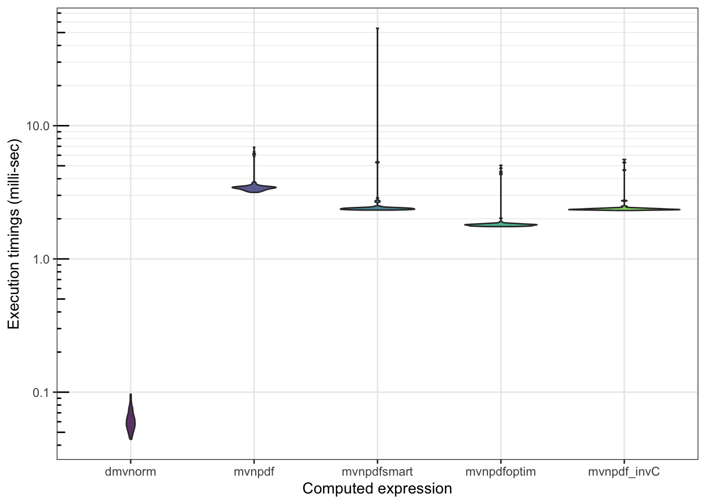

S3 methodgit et GitHub : historique de changement, développement collaboratif et intégration continue
Rcpp ou comment intégrer facilement du code C++dans un package R
R
A vous de jouer !
- Afin de rendre votre package prêt pour l’utilisation avec Rcpp, commencez par executer la commande suivante :
devtools::use_rcpp()
Constatez les changements apportés
il faut également ajouter les 2 commentaires roxygen suivants dans la page d’aide du package dans son ensemble :
#' @useDynLib mypkgr
#' @importFrom Rcpp sourceCpp, .registration = TRUE
NULLNous allons maintenant créer une première fonction en Rcpp permettant d’inverser une matrice.
Pour cela, nous allons nous appuyer sur la library C++ Armadillo.
Il s’agit d’une library d’algèbre linéaire moderne et simple, hautement optimisée, et interfacée
avec R via le package RcppArmadillo.
C++ n’est pas un langage très différent de R. Les principales différences qui nous concernent :
C++est très efficaces pour le boucles for (y compris les boucles for emboîtées). Attention :
il y a souvent un sens qui est plus rapide que l’autre (ceci est dû à la manière dont C++ attribue
et parcours la mémoire).
Chaque commande doit se terminer par un point virgule ‘;’
C++est un langage typé : il faut déclarer le type de chaque variable avant de pouvoir
l’utiliser.
A vous de jouer !
Créez un nouveau fichier
C++depuis RStudio (via le menuFile>New File>C++ File), et enregistrez le dans le dossiersrc. Prenez le temps de le lire et essayez de comprendre chaque ligne.Compilez et chargez votre package (via le bouton “Install and Restart”) et essayez d’utiliser la fonction
timesTwo()depuis la console.Installez le package RcppArmadillo, et n’oubliez pas de faire les ajouts nécessaires dans
DESCRIPTION(cf. Rcpp précédement - vous pouvez expérimentez avec la fonctionRcppArmadillo::RcppArmadillo.package.skeleton()qui a le désavantage de créer beaucoup de fichiers inutiles)À l’aide de la documentation des packages Rcpp et RcppArmadillo de celle de la library Armadillo, tentez d’écrire une courte fonction
invCenC++calculant l’inverse d’une matrice.Lorsque vous avez réussi à compiler votre fonction
invCet qu’elle est accèssible depuisRcréer une fonctionmvnpdf_invC()à partir de l’implémentation demvnpdfsmarten remplaçant uniquement les calculs d’inverse matriciel par un appel àinvC.Evaluer le gain en performance de cette nouvelle implémentation
mvnpdf_invC
n <- 1000
mb <- microbenchmark(mvtnorm::dmvnorm(matrix(1.96, nrow = n, ncol = 2)),
mvnpdf(x=matrix(1.96, nrow = 2, ncol = n), Log=FALSE),
mvnpdfsmart(x=matrix(1.96, nrow = 2, ncol = n), Log=FALSE),
mvnpdfoptim(x=matrix(1.96, nrow = 2, ncol = n), Log=FALSE),
mvnpdf_invC(x=matrix(1.96, nrow = 2, ncol = n), Log=FALSE),
times=100L)
mb## Unit: microseconds
## expr min
## mvtnorm::dmvnorm(matrix(1.96, nrow = n, ncol = 2)) 73.600
## mvnpdf(x = matrix(1.96, nrow = 2, ncol = n), Log = FALSE) 4913.240
## mvnpdfsmart(x = matrix(1.96, nrow = 2, ncol = n), Log = FALSE) 3693.626
## mvnpdfoptim(x = matrix(1.96, nrow = 2, ncol = n), Log = FALSE) 2754.289
## mvnpdf_invC(x = matrix(1.96, nrow = 2, ncol = n), Log = FALSE) 3656.908
## lq mean median uq max neval cld
## 103.7965 136.5585 116.516 138.621 704.642 100 a
## 5169.8160 6971.1184 5621.540 6968.145 23190.019 100 c
## 3849.2295 4837.8747 3925.413 4224.562 39902.143 100 b
## 2931.6385 3996.7956 3073.977 3409.212 16875.955 100 b
## 3835.1910 4276.7027 3928.568 4299.215 13433.512 100 b## Warning: It is deprecated to specify `guide = FALSE` to remove a guide. Please
## use `guide = "none"` instead.
profvis::profvis(mvnpdfoptim(x=matrix(1.96,
nrow = 2, ncol = 1000), Log=FALSE))
profvis::profvis(mvnpdfoptim(x=matrix(1.96,
nrow = 100, ncol = 1000), Log=FALSE))